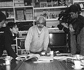

95.12.02（土）
ＩＭスタジオへ仕上げ作業についての具体的な交渉に行く。
95.12.04（月）
スタジオキリーへ仕上げ作業についての具体的な交渉に行く。
95.12.08（金）
以前から宮崎監督と面識があった『トイ・ストーリー』の監督ジョン・ラセター氏来社。かなりの宮崎オタクの様だ。本人の希望により『となりのトトロ』の絵コンテコピーをアメリカに郵送することに。
95.12.12（火）
年末から年明けにかけて、ジブリ作品の集中上映が行われるため、台湾から約10名程の取材陣が訪れ、鈴木プロデューサー、宮崎監督、高畑監督のインタビュー等を行う。

95.12.13 （水）
クロマカラー会長ロイ・エバンス氏来社。
95.12.14（木）
第24回企画検討会「魔女集会通り26番地」が行われる。
95.12.15 （金）
若手原画約2名の、あまりの作業の遅さに、遂に宮崎監督が切れる。手持ちの終わった一人は、罰として複雑怪奇なタタリ神の動画を描くことに。
95.12.17（日）
96年度の動画、美術部門研修生選考試験が行われる。結果、動画部門4人、美術部門2人の合格が決まる。
95.12.23 （土）
96年度の仕上部門研修生選考試験が行われ、二人の合格者が決まる。
95.12.26（火）
宮崎監督からスタッフ全員にクリスマスケーキのプレゼント。
95.12.27（水）
日本テレビから作画参考用に草鞋を借りる。
95.12.28（木）
絵コンテ603 ～679 まで75 CUT分完成。総秒数は55分22秒に達する。
95.12.29（金）
仕事納めと忘年会。毎年恒例のオリジナル年末ビデオは、忘年会終了直前に完成し、上映が行われる。
| 次のページへ |
| 日誌索引へ戻る |
| 「もののけ姫」トップページへ戻る |